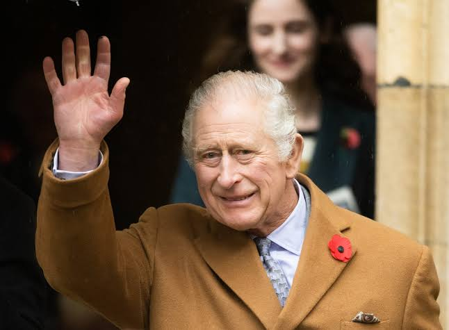
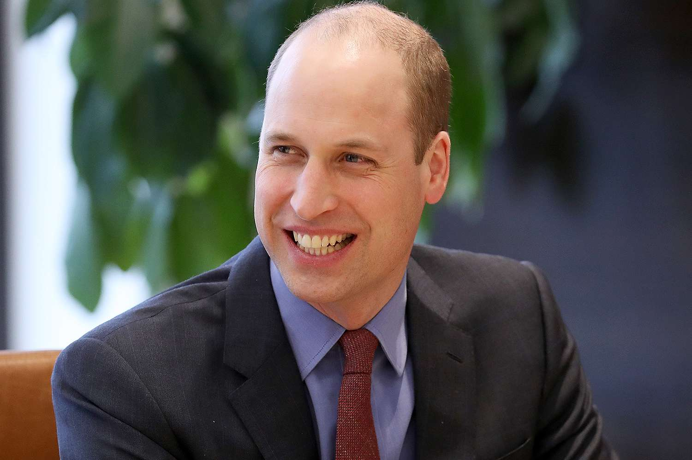
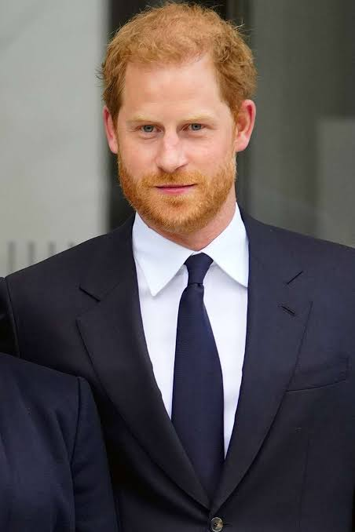

King Charles III's Commitment to Environmental Causes
King Charles speaks at an environmental summit in London.
King Charles III has been an advocate for environmental issues for decades. Recently, he attended a summit in London, calling for stronger action on climate change. His commitment to sustainability has inspired the Royal Family’s initiatives, including efforts to reduce energy consumption and promote green practices across their properties.
Prince William’s Earthshot Prize

Prince William Launches Global Prize for Innovation
William introduces finalists for his Earthshot Prize.
Prince William recently launched the Earthshot Prize, a prestigious award for innovative solutions to the world’s environmental challenges. In its inaugural year, the prize received thousands of submissions, highlighting projects that address issues like air quality, water cleanliness, and sustainable living. William hopes this initiative will inspire a generation to work toward a better planet.
Prince Harry's Mental Health Advocacy

Prince Harry Advocates for Mental Health Awareness
Prince Harry speaks at a mental health awareness conference.
Prince Harry has been outspoken about the importance of mental health support. He shared his own experiences and highlighted the struggles faced by many. Recently, he joined a conference on mental health, where he encouraged others to prioritize their mental well-being and seek help when needed. His advocacy has resonated with many, contributing to a growing conversation around mental health.